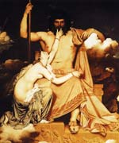

Зевс, Дій ("світле небо"), в грецькій міфології верховне божество, син титанів Кроноса і Реї. Всемогутній батько богів, повелитель вітрів і хмар, дощу, грому і блискавки ударом скіпетра викликав шторми і урагани, але також міг заспокоїти сили природи і очистити небо від хмар. Кронос, боячись бути скинутим своїми дітьми, проковтнув всіх старших братів і сестер Зевса відразу після їх народження, але Рея вмест про молодшого сина подала Кропосу загорнутий в пелюшки камінь, а немовля таємно вивезли та виховали на острові Крит.
Змужнілий Зевс прагнув розрахуватися з батьком. Його перша дружина, мудра Метида ("думка"), дочка Океану, порадила дати батькові зілля, від якого той ізригнет всіх проковтнув дітей.
Здолавши породив їх Кроноса, Зевс і брати розділили світ між собою. Зевс вибрав небо, Аїд - підземне царство мертвих, а Посейдон - море. Землю і гору Олімп, де був розташований чертог богів, вирішили вважати загальними. Вплив Зевса поширювалося на всі сфери; правда, він не мав владу над долею. Тому марно молила його нереїда Фетіда, свого часу яка закликала на допомогу Зевсу сторуких велетнів, врятувати її сина Ахілла від загибелі в Троянській війні. Будучи "батьком людей і богів", Зевс був грізною караючої силою. За його велінням був прикутий до скелі Прометей, який викрав для людей божественний вогонь; він наслав на землю потоп і розв'язав Троянської війни, караючи людський рід за нечестя.
Згодом світ олімпійців змінюється і робиться не таким жорстоким. Ори, дочки Зевса від Феміди, його другої дружини, внесли в життя богів і людей порядок, а харіти, дочки від Еврінома, колишньої володарки Олімпу, - радість і витонченість; богиня Мнемосина народила Зевсу 9 муз. Таким чином, в людському суспільстві зайняли своє місце закон, науки, мистецтва і норми моралі. Зевс також був батьком знаменитих героїв - Геракла, Диоскуров, Персея, Сарпедона, славних царів і мудреців - Міноса, Радаманфа і Еака. Правда, любовні зв'язки Зевса як зі смертними жінками, так і з безсмертними богинями, що лягли в основу багатьох міфів, викликали постійний антагонізм між ним і його третьою дружиною Герой, богинею законного шлюбу. Деяких дітей Зевса, народжених поза шлюбом, наприклад Геракла, богиня жорстоко переслідувала. У римській міфології Зевсу відповідає всемогутній Юпітер.